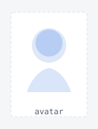
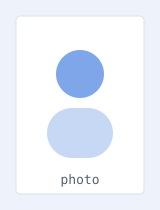

01 · research direction
Summarize one of your core research themes in one sentence, focusing on problems, methods, or systems.


===
I am Your Name, a researcher in [department / lab / institution]. This template is designed for academic personal websites with a lightweight terminal-inspired aesthetic.
Replace this section with a concise introduction to your background, research areas, collaborators, and current projects.
Publications / Contact / Scholar / CV
===================
Summarize one of your core research themes in one sentence, focusing on problems, methods, or systems.
Use this section to help visitors quickly understand the themes that connect your projects and publications.
Degree, department, or program name.
Add a second education entry, exchange program, or research training program if needed.
Summarize what you worked on and what technical area this role focused on.